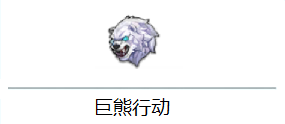
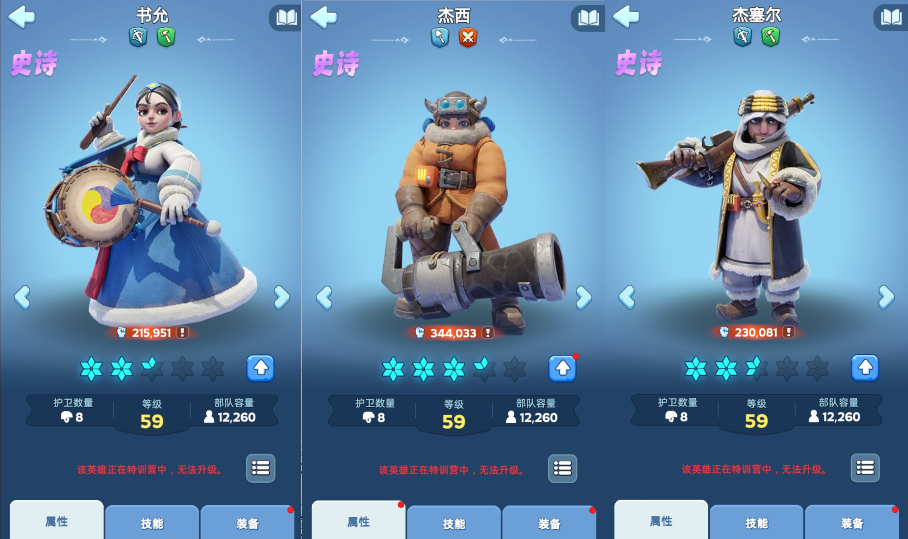
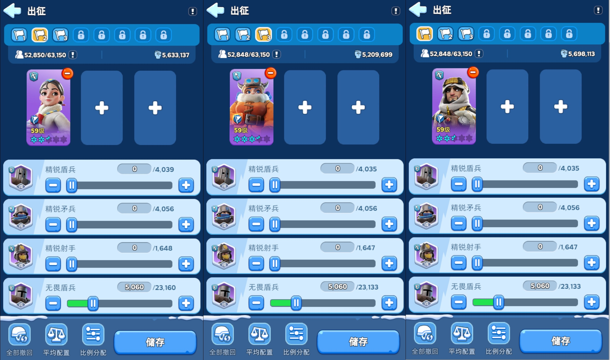
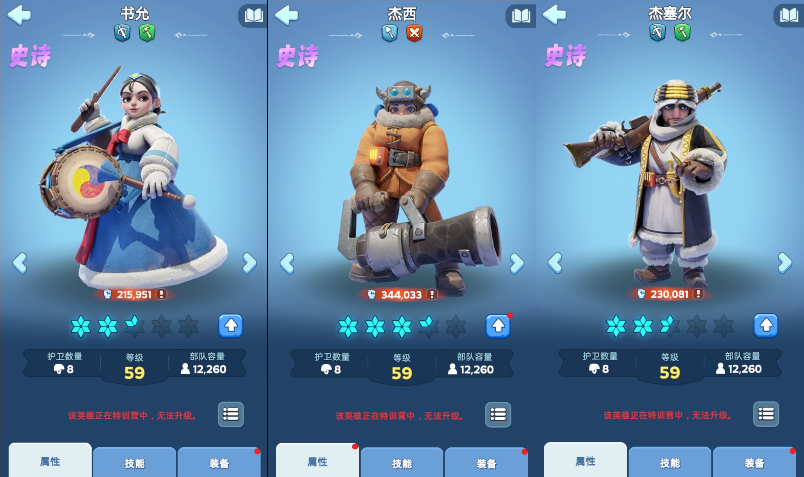
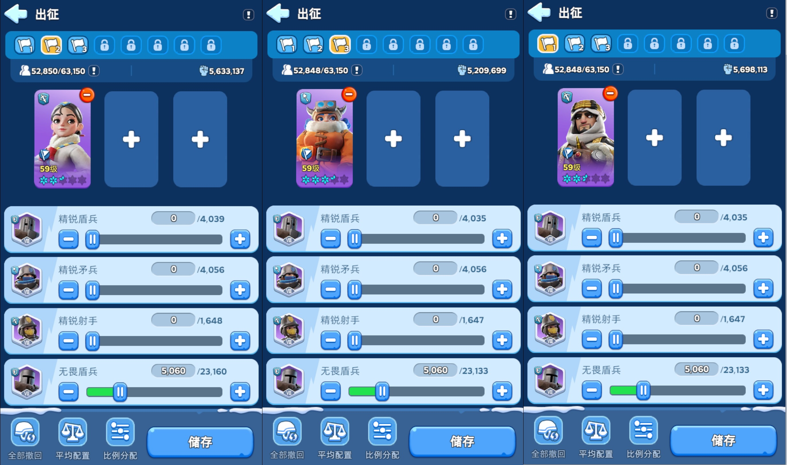

!车头! 指的是 发起集结 的那个人
!车身! 指的是 加入集结队伍 的那个人
!熊坑! 指的是处于总部范围内的 狩猎陷阱
首先为了节约打熊时选择出战队伍的时间，同时预防作为 车身 带错英雄导致输出降低，可以选择保存预设部队编组。
具体如下：左上角头像 - 部队 - 部队编组。这样就可以进入到预设界面进行接下来的预设。
车头 可以随意使用英雄外(一般使用默认编组，即当前拥有的最高战力英雄)。
车身 只允许使用以下三个特定英雄：书允 杰西 杰赛尔 作为队伍首位。 
队伍实际编组如下，为了防止新手出错，图片示例中每个队伍只上阵一个英雄。
出兵比例设置为1：2：7，即盾兵10%，矛兵20%，射手70%。 
!低战力等情况下，跟车伤害收益大于自己发车的伤害收益!
1.高战负责发车（开集结）
根据现在盟的情况，优先由战力前15名(战力 >= 2000万)的成员发车，保证输出最大化。
后期如果人数足够，可以由前20名发车。
低战力成员不要发车，以免拉低整体输出，同时影响效率。
2.发车位置与距离
高战应靠近熊坑，位置优越，便于集结更多部队。(后期会根据需要大致调整各个高战位置)
熊坑附近的高战发车效率高，避免远距离只发出“四车”无效输出。
3.跟车安排
低战作为 车身 上车时，出兵比例可设置为盾兵10%，矛兵20%，射手70%，或者直接选择 平均配置 。
低战每人2-3列队跟车即可。(同时2-3车基本兵力就全部用完了)
!强调!
如果有四列或更多队列时，书允 杰西 杰赛尔 三位英雄用完之后，剩下的队列只允许上阵士兵，不允许 上阵任何其他英雄！
4.低战发车时机
前期不要发车只跟车，避免影响输出。
最后6分钟低战发车，可以打出第6波伤害（正常只能打5波）
组队期间 关闭自动狩猎
组队期间 不允许集结其他队列(如失控的雪怪)
敲黑板！划重点！
这个活动要注意部队编组哦！
----前排告示----
!车头! 指的是 发起集结 的那个人
!车身! 指的是 加入集结队伍 的那个人
!熊坑! 指的是处于总部范围内的 狩猎陷阱
----部队编组----
首先为了节约打熊时选择出战队伍的时间，同时预防作为 车身 带错英雄导致输出降低，可以选择保存预设部队编组。
具体如下：左上角头像 - 部队 - 部队编组。这样就可以进入到预设界面进行接下来的预设。
车头 可以随意使用英雄外(一般使用默认编组，即当前拥有的最高战力英雄)。
车身 只允许使用以下三个特定英雄：书允 杰西 杰赛尔 作为队伍首位。 
队伍实际编组如下，为了防止新手出错，图片示例中每个队伍只上阵一个英雄。
出兵比例设置为1：2：7，即盾兵10%，矛兵20%，射手70%。 
----具体说明----
!低战力等情况下，跟车伤害收益大于自己发车的伤害收益!
1.高战负责发车（开集结）
根据现在盟的情况，优先由战力前15名(战力 >= 2000万)的成员发车，保证输出最大化。
后期如果人数足够，可以由前20名发车。
低战力成员不要发车，以免拉低整体输出，同时影响效率。
2.发车位置与距离
高战应靠近熊坑，位置优越，便于集结更多部队。(后期会根据需要大致调整各个高战位置)
熊坑附近的高战发车效率高，避免远距离只发出“四车”无效输出。
3.跟车安排
低战作为 车身 上车时，出兵比例可设置为盾兵10%，矛兵20%，射手70%，或者直接选择 平均配置 。
低战每人2-3列队跟车即可。(同时2-3车基本兵力就全部用完了)
!强调!
如果有四列或更多队列时，书允 杰西 杰赛尔 三位英雄用完之后，剩下的队列只允许上阵士兵，不允许 上阵任何其他英雄！
4.低战发车时机
前期不要发车只跟车，避免影响输出。
最后6分钟低战发车，可以打出第6波伤害（正常只能打5波）
----特殊说明----
组队期间 关闭自动加入组队期间 关闭自动狩猎
组队期间 不允许集结其他队列(如失控的雪怪)